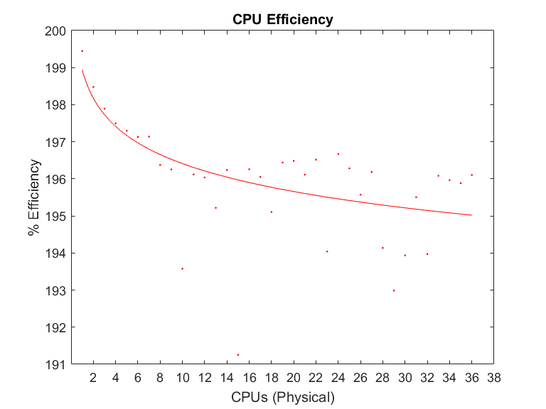
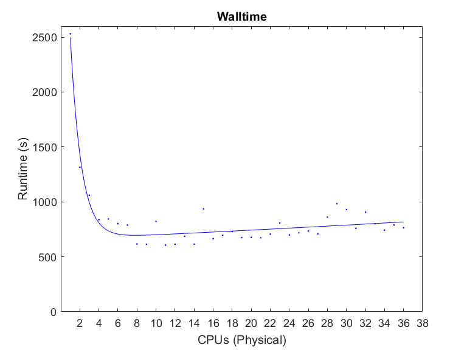

Warning
This page has been automatically migrated and may contain formatting errors.
On Job Completion¶
It is good practice to have a look at the resources your job used on completion, this way you can improve your job specifications in the future.
Once your job has finished check the relevant details using the tools:
nn_seff or sacct For example:
nn_seff
nn_seff 30479534
Job ID: 1936245
Cluster: mahuika
User/Group: user/group
State: COMPLETED (exit code 0)
Cores: 1
Tasks: 1
Nodes: 1
Job Wall-time: 7.67% 00:01:09 of 00:15:00 time limit
CPU Efficiency: 98.55% 00:01:08 of 00:01:09 core-walltime
Mem Efficiency: 10.84% 111.00 MB of 1.00 GB
Notice that the CPU efficiency was high but the memory efficiency was very low and consideration should be given to reducing memory requests for similar jobs. If in doubt, please contact support@nesi.org.nz for guidance.
sacct
sacct --format="JobID,JobName,Elapsed,AveCPU,MinCPU,TotalCPU,Alloc,NTask,MaxRSS,State" -j <jobid>
Prerequisite
If you want to make this your default sacct setting, run;
echo 'export SACCT_FORMAT="JobID,JobName,Elapsed,AveCPU,MinCPU,TotalCPU,Alloc%2,NTask%2,MaxRSS,State"' >> ~/.bash_profile
source ~/.bash_profile
Below is an output for reference:
JobID JobName Elapsed AveCPU MinCPU TotalCPU AllocCPUS NTasks MaxRSS State
------------ ---------- ---------- ---------- ---------- ---------- ---------- -------- ---------- ----------
3007056 rfm_ANSYS+ 00:27:07 03:35:55 16 COMPLETED
3007056.bat+ batch 00:27:07 03:35:54 03:35:54 03:35:55 16 1 13658349K COMPLETED
3007056.ext+ extern 00:27:07 00:00:00 00:00:00 00:00:00 16 1 89K COMPLETED
All of the adjustments below still allow for a degree of variation. There may be factors you have not accounted for.
Walltime¶
From the Elapsed field we may want to update our next run to have a
more appropriate walltime.
#SBATCH --time=00:40:00
Memory¶
The MaxRSS field shows the maximum memory used by each of the job
steps, so in this case 13 GB. For our next run we may want to set:
#SBATCH --mem=15G
CPU's¶
TotalCPU is the number of computation hours, in the best case scenario
the computation hours would be equal to Elapsed x AllocCPUS.
In this case our ideal TotalCPU would be 07:12:00, as our job only
managed 03:35:55 we can estimate the CPU usage was around 50%
It might be worth considering reducing the number of CPUs requested,
however bear in mind there are other factors that affect CPU efficiency.
#SBATCH --cpus-per-task=10
Note: When using sacct to determine the amount of memory your job used - in order to reduce memory wastage - please keep in mind that Slurm reports the figure as RSS (Resident Set Size) when in fact the metric being displayed is PSS (Proportional Set Size). This is an issue with Slurm and cannot currently be fixed. PSS is a more accurate measure of memory usage than RSS - RSS shows the sum of memory used including shared libraries, therefore this gives a figure that is more often than not greater than the actual amount of memory used by your job. PSS provides a more accurate measure.
Further technical notes for those interested in commonly used memory usage metrics on linux systems:
VSS >= RSS >= PSS >= USS
VSS-Virtual Set Size - Virtual memory consumption (contains memory
consumed by shared libraries)
RSS-Resident Set Size - Used physical memory (contains memory
consumed by shared libraries)
PSS-Proportional Set Size - Actual physical memory used
(proportional allocation of memory consumed by shared libraries)
USS-Unique Set Size - Process consumed physical memory alone (does
not contain the memory occupied by the shared library)
PSS = USS + (RSS/# shared processes)
During Runtime¶
In order to check in on a job that is running, you will need to ssh to the compute node where it it running.
Finding Job Node¶
If 'nodelist' is not one of the fields in the output of your sacct or
squeue commands you can find the node a job is running on using the
command; squeue -h -o %N -j <jobid> The node will look something like
wbn123 on Mahuika or nid00123 on Māui
Prerequisite
If your job is using MPI it may be running on multiple nodes
htop¶
ssh -t wbn175 htop -u $USER
If it is your first time connecting to that particular node, you may be prompted:
The authenticity of host can't be established
Are you sure you want to continue connecting (yes/no)?
Reply yes. Y alone (upper or lower case) is not sufficient.
Focusing on the lower panel, you will see a printout of all of your current processes running on that node. If you have multiple jobs on the same node, they will all be shown (you can tell them apart by their parent process).
Processes in green can be ignored

RES - Current memory being used (same thing as 'RSS' from sacct)
S - State, what the thread is currently doing.
- R - Running
- S - Sleeping, waiting on another thread to finish.
- D - Sleeping
- Any other letter - Something has gone wrong!
CPU% - Percentage CPU utilisation.
MEM% Percentage Memory utilisation.
Prerequisite
If the job finishes, or is killed you will be kicked off the node. If
htop freezes, type reset to clear your terminal.
Limitations of using CPU Efficiency¶
CPU efficiency, as described here, only represents the percentage of time the CPUs are in use. This is not enough to get a picture of overall job efficiency, as required CPU time may vary by number of CPUs.
The only way to get the full context, is to compare walltime performance between jobs at different scale. See Job Scaling for more details.
Example¶

From the above plot of CPU efficiency, you might decide a 5% reduction of CPU efficiency is acceptable and scale your job up to 18 CPU cores .

However, when looking at a plot of walltime it becomes apparent that performance gains per CPU added drop significantly after 4 CPUs, and in fact absolute performance losses (negative returns) are seen after 8 CPUs.
Created: July 21, 2021